WOLF RPGエディターで作られたゲームを他言語版に翻訳する上で、ゲームデータ内の文字列のうち「翻訳が必要な部分」と「そうでない部分」をご紹介します。 以下のA～Cのうち、「A.翻訳が必須の箇所」と「B.翻訳が任意の箇所にすべき場所」がこのツールで抽出・翻訳される部分です。 ●A. 翻訳が必須の箇所 ・「ゲームタイトル」（ゲーム基本設定より） ・「使用フォント」（ゲーム基本設定より） → 翻訳先で使用可能なフォント名を指定してください。 ・「文章の表示」コマンドの文字列 ・「選択肢の表示」コマンドで扱う文字列全て ・「ピクチャ」コマンドの「文字列ピクチャ」の内容 ・「文字列操作」コマンドで扱う文字列全て ・「文字列分岐」コマンドで扱う文字列全て ・「データベース」ウィンドウの右側データ項目内に入っている文字列全て （※ただし「選択肢を手動作成」で作成した選択肢はゲーム中に出ないので抽出・翻訳されせん） ・「ゲーム基本設定Pro」（ウディタプロ版）の設定欄の文字列全て ・ゲーム内の「ファイル名指定」（ピクチャコマンドや音声指定時など） ●B. 翻訳が任意の箇所 この部分はゲーム中に表示されない場合が多く、かつ翻訳を行わなくても動作する部分です。 ・マップイベント名・コモンイベント名 ・「イベントの挿入[名]」コマンドのコモンイベント名 → 基本的にイベント名は画面上に表示されないので、 多くの場合は翻訳しなくても問題ありません。 → 「イベントの挿入[名]」で指定されている方の「コモンイベント名」も、 名前が正しく一致していれば言語が違っても正常に動作します。 → 翻訳が必要なパターンは、これらのイベント名を「ゲーム中の画面に表示している」場合です。 その場合、「オプション」でこれらイベント名を抽出対象にすることが可能です。 → もしオプションで「コモンイベント名」を抽出対象にした場合、 「イベントの挿入[名]」イベントコマンドの「名前呼出」部分もExcelに抽出されます。 ・データベースのタイプ名、データID名、項目名 ・「DB操作」コマンドの呼び出しタイプ名・データ名・項目名 → それぞれの名前は「ID番号とのひも付けを行う目的だけに使われている」ので、 日本語のままでも、中国語や英語の言語設定上でも問題なく呼び出せます。 → もしこれらの名前を「ゲーム中の画面に表示している」場合は翻訳が必要です。 その場合、「オプション」でタイプ名、データID名、項目名、を個別に抽出対象することが可能です。 → オプションで抽出対象にした場合、データベース内の各々の名前だけでなく、 「DB操作」イベントコマンドの「名前呼出」指定部分もExcelに抽出されます。 ●C. 翻訳をする必要がない箇所 以下はゲーム上に表示される可能性がないため、抽出・翻訳自体が行われません。 ・コメント文・デバッグ文 → ゲーム画面には実行・表示されないのでゲーム実行上は何の影響もありません ・その他、「エディタ上だけで表示される文字列（＝ゲーム内で表示されない文字列）」全て。 （「DBやコモンイベント特殊指定時の選択肢の名前」など） 以上のことから、このツールは、●A. 翻訳が必須の箇所 、●B. 翻訳が任意の箇所 の文字列のみを抽出、置換するものとなっています。 ●C. 翻訳をする必要がない箇所 の部分は抽出されません。 基本的には、このツールで出力されたExcelファイルの文字列を翻訳して「翻訳済みゲームデータ」を作れば、ゲームとして表示されうる部分を網羅して翻訳できることになります。 |
|
||||||||||
2－1. 対訳Excelファイルを開く Excelファイルを読み込むことができるソフトがインストールされていれば、「◆対訳Excelファイルを開く（要Microsoft Excel）」ボタンを押すことで対訳ファイル「WOLF_Translation_Text.xlsx」が開かれます。
↓ ボタンをクリックすると対訳ファイルが開きます。 ※ファイルを開くにはxlsx形式のファイルを読み込めるソフトがインストールされている必要があります。 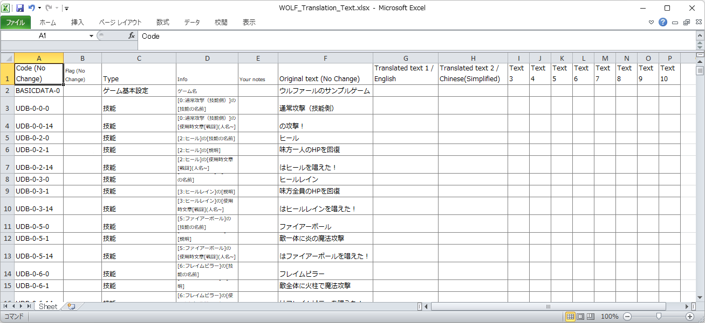 各列の説明は以下の通りです。(No Change)と書かれた列（Code、Flag、Original Text）は変更しないでください。 ・Code：ゲームデータ内のどこにその文字列があるかを示す「コード」です。この情報にしたがって、翻訳時にその場所の文字列が置換されます。 ・Flag：その文字列がどういう特性を持つかを示すフラグ情報です。「半角のみ」だとか、「どこどこの行と全く同じ原文なので指定がなければそっちの【訳文】をコピーして使います」といったフラグが入っています。詳しい説明は後述。 ・Type、Info：ツールが提供するおまけ情報です。この欄に何か書いてもいいですが、「Your notes」と違って最新版ゲームデータへの更新時に全てリセットされてしまいます。 ・Your notes： メモ欄です、自由に記入してください。最新版ゲームデータへの更新時にも引き継がれます。 ・Original text：原文です。これを見ながら隣の訳文（Translated text）を書いていきます。 ・Translated text：訳文です。ここにあなたが訳を書き込みます。 2－2. 対訳を記入する Xlsxファイルの「Translated text1～10」の列に、言語に応じた対訳を記入してください。 ↓英語と簡体字の訳文を記入した例（赤枠部分が記入された部分です） 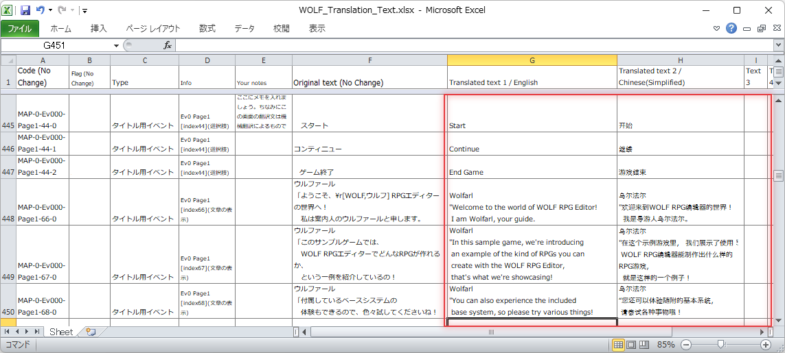
|
{kind=link}
{kind=link}
3－1. もし起動中ならTranslatedフォルダ側のEditor.exeを閉じる もし「Translated1～10」側のEditor.exeを起動中だった場合は、いったん閉じてください。 （もしEditor.exeを閉じずに次の置換処理をしたとき、Editor上で古いデータを開いた状態のままになってしまうので、そのまま保存するとデータが巻き戻ってしまう場合があります！） 3－2. 「①翻訳先のゲームフォルダ作成/更新」をする ※これは一度だけやれば、元ゲームデータの画像・音声ファイルが変わらない限り、やりなおす必要はありません 対訳Excelファイルの翻訳が完了したら、次はゲームデータの翻訳に移ります。
「①全翻訳先のゲームフォルダ作成/更新」ボタンを押してください。 自動で以下の処理を行います。 1. 翻訳する言語数に応じて、ゲームフォルダ下に「Translated1_XX～Translated10_XX」フォルダを作成する。 2. 元のゲームデータの「Data」フォルダをコピーし、Translatedフォルダ内のDataフォルダにコピーする。 ※この時点のゲームデータはまだ翻訳されていない点に注意してください。 ※「Basicdata/AutoBackup～」フォルダはコピーされません。 ただし処理の都合上、「ファイルが入ってない」AutoBackup～フォルダの場合は空のフォルダだけコピーされる場合があります。 3. Config.exe、Editor(Pro).exe、Game(Pro).exe、GuruguruSMF4.dll をTranslatedフォルダ内にコピーします。 この処理を1回行えば、翻訳済みゲームデータを作成するための準備が整います。
3－3. 「②対象のゲームデータを翻訳」をする 「②対象のゲームデータを翻訳」ボタンを押してください。 「全言語」が選ばれていれば、Translated1～10フォルダそれぞれに、対訳Excelを元にして作られた、元データの文字列を訳文に置換した【テキストファイル・マップファイル・コモンイベントファイル】が上書きされます。 これにより、【Translated1～10】フォルダ内に各言語で翻訳されたゲームデータが作られます。 隣のプルダウンメニューで1つの言語が選ばれている場合は、その1つだけ翻訳します。 |
4－1. テストプレイを実行 「Translated1～10」フォルダ内のGame.exeを起動して、翻訳が問題なく行われているか、文字が期待通り表示されているか確認してください。 翻訳内容は以下のように反映されます。 ◆対訳Excelファイルの翻訳内容 (翻訳は機械翻訳によるものです) 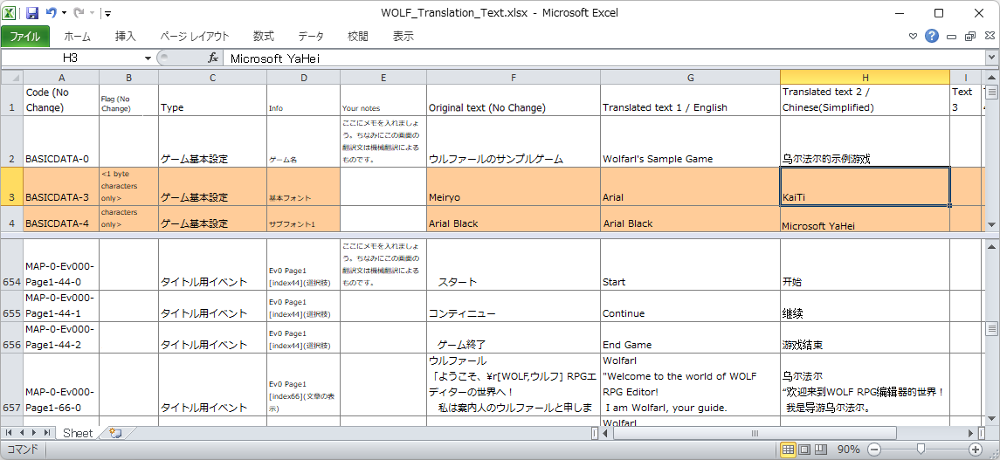 ※「基本フォント」も言語別に設定されている点に注目してください。言語別に適切なフォントを使わないと文字化けします！ ◆英語(Translated1_English フォルダ)のゲームデータ実行例↓ 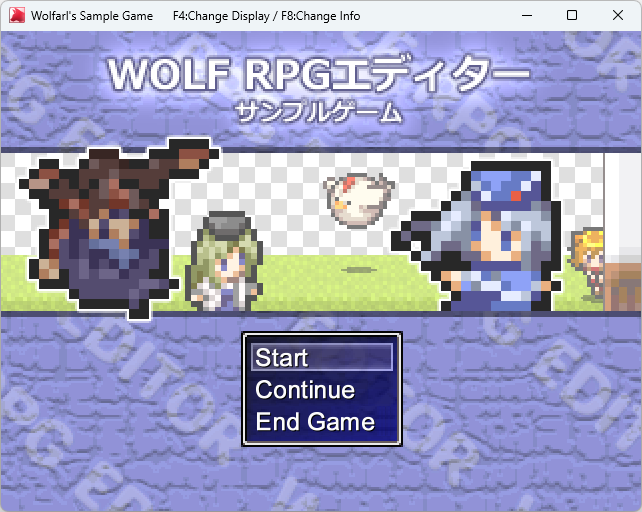 ◆簡体字(Translated2_Chinese(Simplified) フォルダ)のゲームデータ実行例↓ 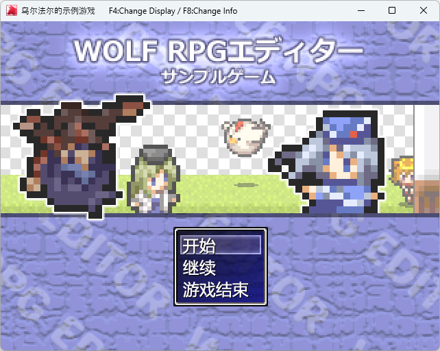 4－2. すごく慎重な人向け Windowsのシステムロケールを変更してテストする 中国語、韓国語など、翻訳する言語が今のシステムロケール設定と異なる場合は、事前にWindows側の「システムロケール（OSの地域設定）」を変更してテストするほうが、より正確な再現条件でテストできます。 特に、言語環境を中国語や韓国語に変えると一部のフォントが読み込めなくケースが確認されています。 「システムロケール」の変更手順は以下の通りです。 Windowsの「時刻と言語」 → 地域 → 「管理」タブ → Unicode対応ではないプログラムの言語の「システム ロケールの変更」 以上の手順で画面を開き、テストしたい「言語」を変更してください。 たとえば簡体字に翻訳したゲームデータなら、システムロケールを「中国語（簡体字、シンガポール）」などに変更する必要があります。 その際、Windowsの再起動が必要です。だいぶ面倒臭いです。 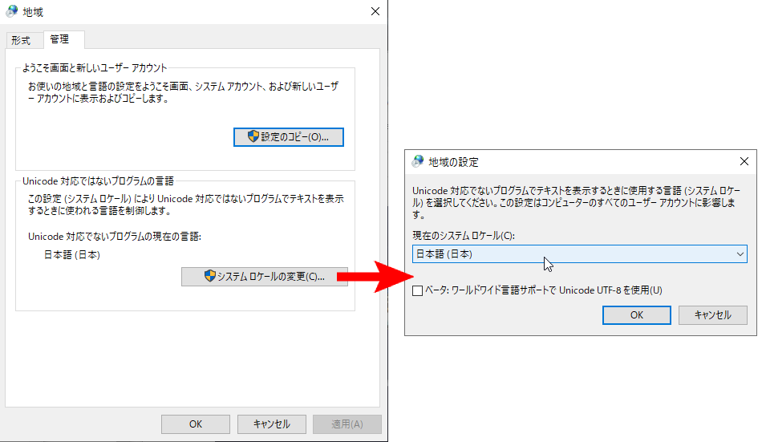
|
|||||
これまでご紹介した1～4の手順は、「翻訳作業の途中でゲームデータ内の文字列の位置や量が変わらない」ことを前提とされています。 なぜなら翻訳済ゲームデータを作成する際、Excelファイルの「Code」列のコードで指定された場所の文字列が置換されるからです！ そうなると、「あれ、じゃあゲームデータをいじったら大量にExcelファイルのCode部分も書き換えないといけないの！？」と疑問に思われるかもしれません。実はその通りなのです。 ですがご安心ください！ このツールには、バグ修正やアップデートにより文字列が存在していた行数が元から変わってしまう場合に備えた更新処理が用意されています！ しかもワンボタンで使用可能です。 ただし更新時の注意点はいろいろありますので、その辺りに注意して読み進めてください。 ※この処理は「まったく同じ複数の原文(Original text)」に「複数の異なる訳(Translated text)」が付いていた場合、100％確実な移行を保証しません。つまり、どれがどの訳にあたるかの割り当てに失敗する場合がございます。 あらかじめ、その点をご了承ください。 A－1. 更新処理を実行する Excelファイルを最新のゲームデータに合わせて更新したい場合は「△対訳Excelを最新ゲームデータ分に更新」ボタンをクリックしてください。
「△対訳Excelを最新ゲームデータ分に更新」ボタンを実行すると対訳ファイル「WOLF_Translation_Text.xlsx」が現在のゲームデータに合わせて修正されます。 これで最新ゲームデータへのExcel移行処理は完了です！ 同時に、そのExcelファイルがある場所の「Backup」フォルダ内に ・「WOLF_Translation_Text.Backup_20XXXXXX_XXXX2.xlsx」（XXX...には年月日、時・分・秒が入る) という修正前のExcel用ファイルと、 ・「WOLF_Translation_Text_DIFF_20XXXXXX_XXXX.xlsx」（XXX...には年月日、時・分・秒が入る） という、修正前のバージョンからの差分を記したExcel用ファイルが生成されます。
A－2. [任意] 差分Xlsxファイルを確認する 更新処理を行うと、「最終差分を見る」ボタンがクリック可能になります。 こちらをクリックすると、「Backup」フォルダ内にある最終更新差分Excelファイル「WOLF_Translation_Text_DIFF_20XXXXXX_XXXX.xlsx」（XXX部分は「日時」）を開くことができます。 開くと、元の対訳ファイル「WOLF_Translation_Text.xlsx」と同じようなフォーマットのデータになっていることが分かると思います。 この差分ファイルには、【文章のあった「位置」や、「原文の内容」に変更が加えられた文字列】、【前バージョンから「削除」された文字列】がピックアップされています。 【差分ファイルの見本】 ※Info欄に「<NEW>」「<MOVE>」表記が付いているのに注目してください。 上半分が対訳Excelファイルに「新たに追加された内容」で、下の赤い背景の部分は「削除された内容」です。 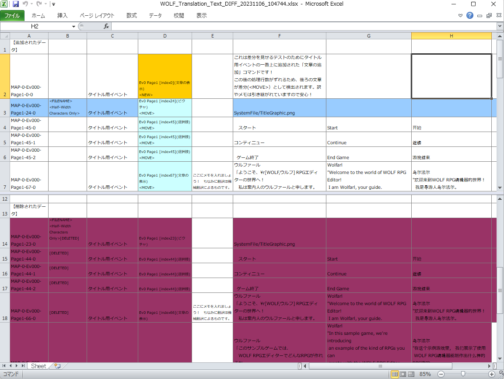 A－3. 対訳Xlsxに追加された分を確認、修正する 上記の差分ファイルを見て気になる点があれば、必要に応じて対訳ファイル「WOLF_Translation_Text.xlsx」内の必要な文字列を翻訳しなおしてください（対訳ファイルはもはや言うまでもなく、「◆対訳Excelファイルを開く（要Excel）」から開くことができます）。 対訳ファイルの更新された行のInfo欄に「<NEW>」と書かれており、Info欄の背景が黄色になっているのが分かります。 同様に、場所が移動したと思われる行のInfo欄には「<MOVE>」と追記され、Info欄の背景が薄い水色になります。 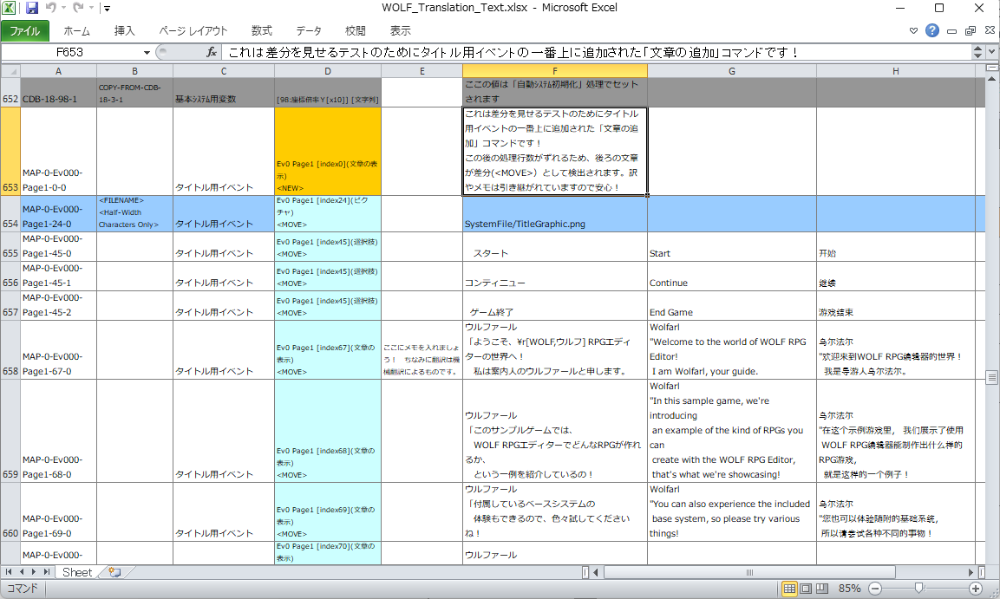 A－4. 【4.文字列の置換とテストプレイ】をおこなってください ここまで終わったら、再び【3. 翻訳済ゲームデータの作成】～【4.テストプレイ】の手順をおこなってください。 これで最新ゲームデータに対応した翻訳作業は完了です！ |
{kind=link}
{kind=link}
難しい漢字を含む画像・音声・マップファイルがある場合、暗号化データ内から正常にファイルを読み込めない可能性があります。 とはいえ、ファイル名を修正する作業は大変です！ ただファイル名を書き換えるだけならまだしも、「ゲームデータ内からそのファイルを呼び出している処理を全て探し、全てのファイル名指定を書き換えなければならない」のです！ そこで、このツールを使って「ファイル名を全て半角英数字にする作業」をいくらか楽にする方法をご提案します。 ただし、このツールでできるのは「エディタ上での『ファイル指定』の文字列を書き換える」ことだけで、「各ファイル名の変更」自体はエクスプローラー上などから直接おこなっていただく必要がある点に注意してください。 【この項目での目標】 ここでは、言語は同じまま、「ファイル名（とゲームデータ内のファイル名指定）を半角英数字のものに変えただけ」の、「元とほぼ同じゲームデータ」を作ることを最終目標として手順を説明していきます。 B－0. 前準備 ここでは、まだこのツールでの翻訳処理を何もしていない前提で説明していきます。 もしすでに何らかの作業を行っている場合は、 ・ゲームデータ内の「WOLF_Translation_Support_Tool_Data」フォルダを削除する （翻訳途中のデータがあったら消えてしまいます！ 注意してください） か、 ・ゲームデータを別のところにコピーする。 「WOLF_Translation_Support_Tool_Data」フォルダがあったら削除しておく。 のどちらかの手順をおこなった後、【翻訳サポートツールをいったん閉じて再起動】してから作業を始めてください。 B－1. 翻訳設定をする 日本語→日本語に変換 ＋ 並び順は全てON設定 いつも通り、ツールのトップ画面から「翻訳元ゲームフォルダを変更」で作業対象のゲームフォルダを選択します。 次に「①翻訳設定」ボタンを押し、以下の画面で翻訳設定を行います。 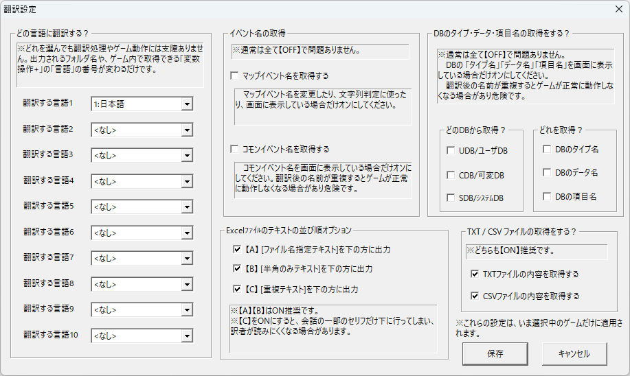 ・「どの言語に翻訳する？」は「日本語」に設定してください（実はどれを選んでも問題は起きませんが一応分かりやすくするため）。 ・「Excelファイルの文章データの並び順オプション」は「【A】「ファイル名指定テキスト」、【B】半角のみテキスト、【C】重複テキストを下の方に出力」のすべてにチェックを入れてください。 → これは「ファイル名指定の部分だけ探したい」、「日本語（全角文字）を含むファイルだけを探したい（半角のみの分は無視したい）」、「重複したファイル名の指定をせずに済ませたい」の3つの理由からです。（とはいえ、「ファイル名指定」に関しては、【文字列操作】処理内などにファイル名が記述されている場合もあって確実ではないので、これはおまけ程度に考えてください） B－2. 対訳Excelファイルを作成・開く ツールトップに戻り、「②対訳Excelファイルを新規作成」ボタンを押します。 処理が終わったら、「◆対訳Excelファイルを開く」ボタンでExcelファイルを開きます。 スクロールすると、Flagに<FILENAME>タグが含まれた以下のような場所を見つけられるでしょう。 この青い背景のデータが集まっているのが「全角文字を含むファイル名」が集まる主な場所です。 （処理や設定次第では他の場所にも全角のファイル名指定があります。油断はしないように！） 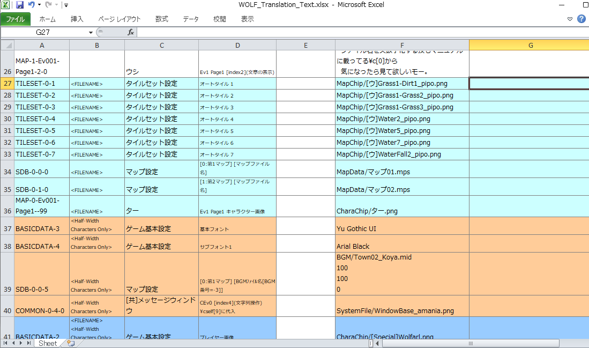 B－3. 対訳Xlsxに、半角英数字のファイル名指定を書き込む すぐ目に入る全角ファイル名には、「Translated text 1 / Japanese」の列に「半角英数字に直したファイル名」を書き込んでください。 その分が終わったら、他にもないか調べましょう。 対訳Excelファイル上で、Excelの「検索」機能でファイルの拡張子を検索し、そこに「半角英数字に直したファイル名」を書き込んでください。 以下のファイル拡張子で検索すれば探しやすいはずです。 【注意すべきファイル形式】 .mps .png .jpg .bmp .wav .ogg .mp3 「ファイル名指定以外の文字列はそのままにしたい」ので、ファイル名指定以外の場所には何も書き込まないでください。 うっかりスペースを入れたりするのも厳禁です。 「ファイル名」のところだけ半角英数字で訳を書いた入力例↓ 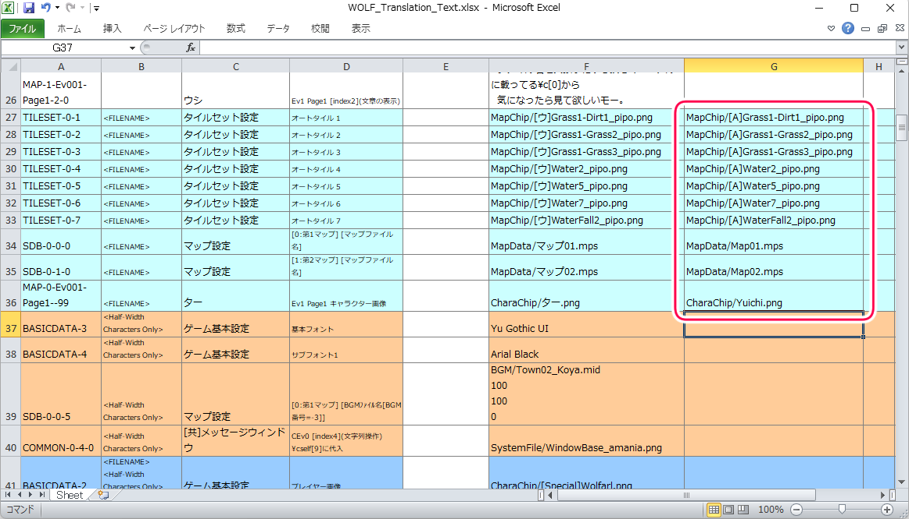 ここで注意ですが、「背景が灰色の行」には書き込む必要はありません。 というより、「灰色の行」に書き込むと1つのファイル名に2つの名前が付くことになり、問題が起きます！ （「灰色の行」は「重複箇所」を示しており、空欄にしておけば最初に書き込んだのと同じ内容がそのままコピーされます） ↓灰色のセルには書き込む必要はありません。オレンジのセルも、「半角のみ」の部分なので変更する必要はないはずです。 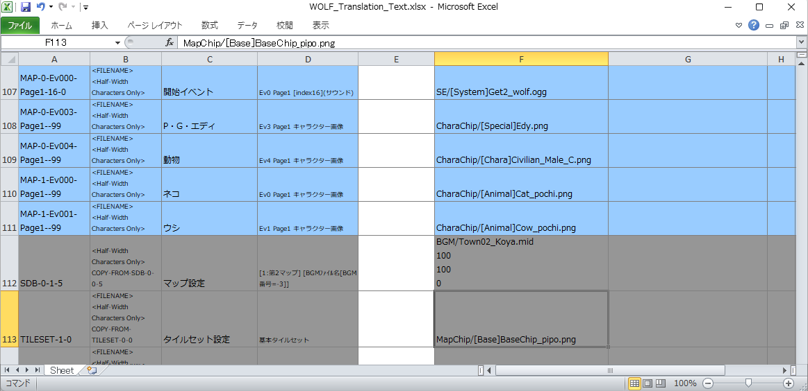 ※なお、【文字列を組み合わせてファイル名を作っている】場合は、その文字列も全て半角英数字にする必要があります。 → 【例】 文字列操作で 「主人公立ち絵」 + 「00」 + 「.png」 のように繋げてファイル名を作っている場合は、当然「主人公立ち絵」の部分も半角英数字にしなければなりません。 B－4. 翻訳済ゲームデータを作る 対訳Excelに半角英数字のファイル名を書き終わったら、翻訳済みゲームデータを作りましょう。 「①翻訳先のゲームフォルダ作成/更新」ボタンをクリックし、処理が終わったら次に「②翻訳済ゲームデータを作成」します。 するとゲームデータ内に「Translated1_Japanese」フォルダが作られます。 B－5. Translated1_Japaneseフォルダ内のファイル名を変更する 次に、ゲームフォルダ内に作られた「Translated1_Japanese」フォルダにある「Data」フォルダを開きます。 ここまでの作業で「対訳Excel内」や「Translated1_Japanese側のゲームデータ内」では半角英数字にしたファイル名指定になっていますが、実際のファイルはまだ半角英数字のものになっていないはずです。 なので次は、フォルダ内のファイル名を「対訳Excelに書いた通り」に全て【半角英数字】に変更してください。 根気が必要な作業となります。まとめてファイル名を変換できるツールなどがあるなら、それを使うと楽でしょう。 【対訳Excelファイルに書かれている内容】 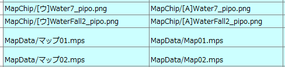 【上の対訳の通りに手動でファイル名を書き換えた例 （Data/MapDataフォルダ内）】
B－6. テストプレイ 「Translated1」のDataフォルダ内のファイル名を全て半角英数字のものに変更し終わったら、テストプレイして、以前の通りに正常に動作するか確認してください。 ここまでの手順をこなせば、「Translated1_Japanese」フォルダには、元データと同じ挙動をする「ファイル名を全て半角英数字に変えただけのゲームデータ」が完成します！ 今後はこのTranslated1_Japaneseに作られたデータを使って開発・翻訳作業をおこなっていけば、暗号化データ上でもファイル読み込みの問題は起きなくなるはずです。 フォルダ名も「Traslated1_Japanese」から本来の「ゲーム名」のフォルダ名に書き換えて、メイン開発用のデータとして使うとよいでしょう。 （言い換えると、「元のゲームデータ」はこれで不要になります。ただ、この手順で文字列が正常に置換できなかったり、意図しない文字列が置換されたなどの事故が起きている可能性もあるため、「元のゲームデータ」は念のため取っておきましょう） |
{kind=link}
{kind=link}
{kind=link}
{kind=link}
翻訳ゲームデータの出力を自動処理に含めたい場合や、複雑なファイル操作をまとめてbatファイルで行う場合などに活用できます。 【コマンド実行例】 【注意！】exeファイルの名前はお使いのEXEに合わせて変更してください。 この例では有料ライセンス用のEXE名「WOLF_TranslationSupportTool_for_PaidGames.exe」にしています。
|
|||||||||||||||||||||||||
| 【Q＆A】 |
Q1. ツールに同梱されているSAMPLE_DATA.zipの使い方を教えてください
1．まず「SAMPLE_DATA.zip」を解凍します。「SAMPLE_DATA」フォルダが作られます。2．この翻訳サポートツールを起動します。
3．ツールの「翻訳元ゲームフォルダを変更」をクリックし、ファイル選択画面で「SAMPLE_DATA」フォルダ内の「Game.exe」を選択して「開く」を選択。
4．ツール上のボタンが全て押せるようになっているので、試したい内容別に以下の手順を取ってください。
（このゲームフォルダにはすでに翻訳設定が行われており、対訳書き込み済の対訳Excelファイルも入っています）
【解凍されたゲームを遊んでみたい】
・解凍された「SAMPLE_DATA」フォルダを開き、「Game.exe」を実行して下さい。
【対訳Excelファイルを見たい】
A．「◆対訳Excelファイルを開く」ボタンをクリックして下さい。Excelファイルを開ける状況ならファイルが開かれます。
B．もしクリックしても反応がなかったり、ファイルを開くソフトをお持ちでない場合は、以下の手順を行ってみてください。
1.ツール上の「Googleスプレッドシート」ボタンでGoogleスプレッドシートを開く（Googleアカウントへのログインが必須です）
2.ブラウザに表示されている選択肢の中から「空白」を選択
3.シート画面に入ったら「ファイル」→「インポート」→「アップロード」タブを選択し、
「SAMPLE_DATA」フォルダ内の
「WOLF_Translation_Support_Tool_Data」フォルダ内にある
「WOLF_Translation_Text.xlsx」を選んでください。
4.ブラウザ上のシート画面にExcelファイルの内容が開かれます。
【ゲームの翻訳をおこなってみたい → 翻訳済ゲームデータを遊びたい】
1．ツールの「①全翻訳先のゲームフォルダ作成」ボタンをクリックする。処理が終わったら「閉じる」をクリック。
2．ツールの「②対象言語のゲームデータを翻訳」ボタンをクリックする。処理が終わったら「閉じる」をクリック。
3．右下の「全言語」と書かれたドロップダウンメニューから見たい言語を1つ選ぶ。「英語」「西欧文字」「簡体字」「繁体字」「ハングル」
4．「↓実行」をクリックするとその言語で翻訳されたゲームが始まります。
「↓開く」をクリックするとその言語で出力されたゲームフォルダを開きます。
Q2. 翻訳ツールに「体験版/無料ゲーム用/有料ゲーム用/エンタープライズ」ライセンス版がありますが違いは？
どれも翻訳機能はほぼ同じですが、「使用ルール」や「データ数の制限」が異なります。
◆動作確認用 体験版
・無料でダウンロード可能です。動作確認に使ってください。
・抽出・置換される数に制限があります。
- 3マップ各10イベントまで（最大200行）
- 5コモンイベントまで（最大200行）
- 各DB5タイプ各50データまで
- CSV・TXTファイルは1ファイルずつまで
・この体験版で翻訳されたゲームデータは公開できません。
翻訳されたゲームの起動時にはタイトルバーに一瞬「+ WOLF Translation Tool Trial」のような表記が出てきます。
◆無料ゲーム用ライセンス（1チーム）
・購入者と、同居しているご家族のみ利用が可能です。
・【1チーム分】の【無料配布のゲーム】のみ翻訳が許可されています。【有料販売ゲーム】の翻訳には使ってはいけません。
・このライセンスの場合、翻訳したゲームデータ内に「無料ゲーム用ライセンスの翻訳ツールが使われた」という、電子透かし的なデータが書き込まれます。
・1ライセンスあれば、「自チーム」の複数の「無料ゲーム」に対して何本分でも使用可能です。
◆有料ゲーム用ライセンス（1チーム）
・購入者と、同居しているご家族のみ利用が可能です。
・【1チーム分】の【有料販売用のゲーム】の翻訳か、【無制限のチーム】の【無料ゲームの翻訳】、両方に使えるバージョンです。
・翻訳したゲームデータ内に「有料ゲーム用ライセンスの翻訳ツールが使われた」という、電子透かし的なデータが書き込まれます。
・1ライセンスあれば、「自チーム」の複数の「無料ゲーム」と「有料ゲーム」に対して何本分でも使用可能です。
◆エンタープライズ ライセンス（∞チーム）
・企業であれば1部門内の全従業員が業務において使用可能です。
企業でない場合、チームとしての業務においてチーム全員が利用可能です。
・有料販売用/無料公開用のゲームに無制限に使用可能な企業用バージョンです。
・1ライセンスで無限のチーム数のゲームに対して利用可能です。大規模な翻訳者/パブリッシャー向けです。
・このバージョンに限り、翻訳したゲームデータ内に電子的な透かし情報は書き込まれません。
↓ライセンス表記は無料ゲーム版は青のバナー、有料ゲーム版は赤のバナー、エンタープライズ版は灰色のバナーで表示されています。
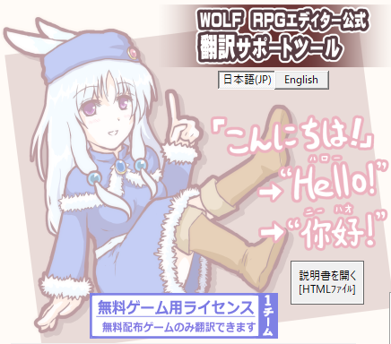 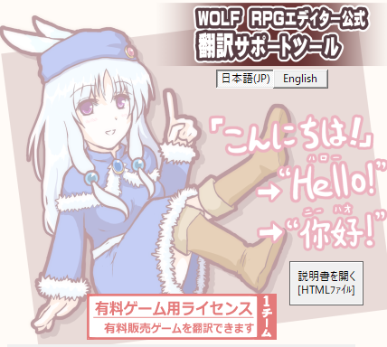 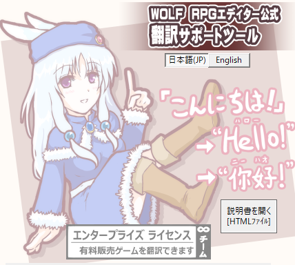
Q3. 画像内に文字が入っている場合はどう翻訳すればいいですか？
画像内に文字が入っている場合は以下の手順で翻訳を行ってください。これはサンプルゲームのタイトル画像「SystemFile/TitleGraphic.png」の、タイトル部分の文字を英語版に翻訳する見本です。
1. 「画像内の文字」を【対象の言語】に書き換えた画像を作って元ゲームデータに入れる。
↓ ここでは「SystemFile/TitleGraphic_EN.png」という、タイトル部分の文字を【英語】に置き換えた画像を作成します。
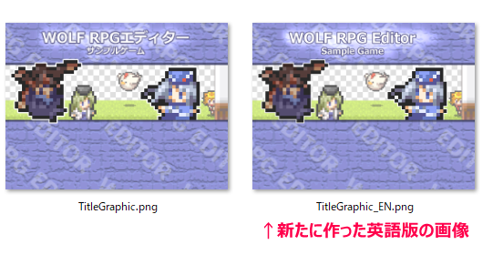
2. 新たに作った画像ファイル名を、元ファイル名の「訳文」として入力する。
↓ ここでは「SystemFile/TitleGraphic.png」の英語の訳文として 「SystemFile/TitleGraphic_EN.png」を記入しています。
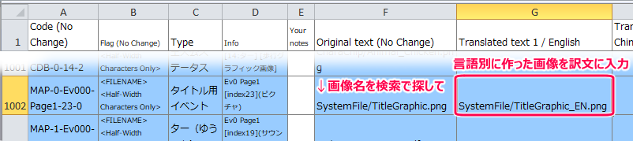
3. ツールの「①全翻訳先のゲームフォルダ作成」を実行
新たな画像ファイルが増えたので、一度この処理を行う必要があります！
4. あとはいつも通り「②対象言語のゲームデータを翻訳」で翻訳ゲームデータを作成します。
英語版を「↓実行」すると以下の画面が表示されます。タイトル画面が英語版の画像ファイルに変わっていることが分かります。
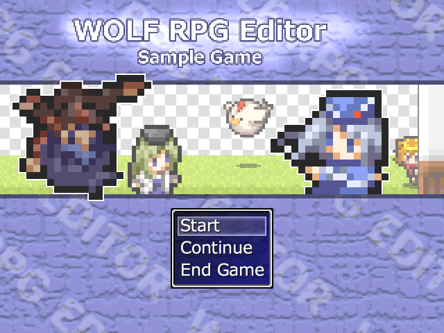
※この手順を使わない場合、以下Q4の手順を使い、「言語別に処理を分岐」させることで表示する画像ファイルを変える方法もあります。
Q4. 言語別に処理を分岐させたいのですがどうすればいいですか？
この手順では、WOLF RPGエディターのEditor.exe側での作業が必要です。1. まずこのツールの「翻訳設定」で翻訳先の言語と番号を確認します。
ウディタのゲーム内で、ここで指定されている言語の「番号（「2：英語」なら「2」）」を「言語」番号として得ることができます。
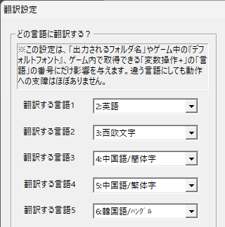
2. ウディタ本体のEditor.exe（またはEditorPro.exe）を開き、イベントコマンドで【変数操作+】の「その他」から「言語[1:日/2:英/3:西欧/4:中国(簡)/5:中国(繁)/6:ﾊﾝｸﾞﾙ]」を取得します。
これで得られる値は、さきほどの「翻訳設定」の言語番号と連動しています。
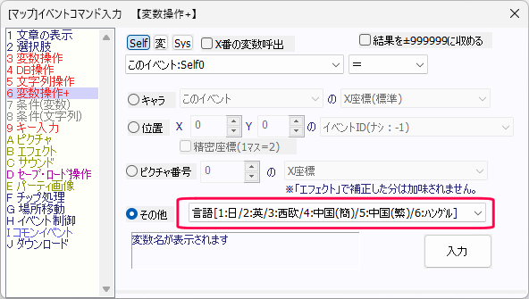
3. あとは2で得た「言語」番号を使って処理を分岐させます。
以下の画像は、変数操作+で取得した「言語」番号をセルフ変数0に代入して分岐処理をさせている例です。

- 分岐【1】：セルフ変数0が翻訳前の「1（日本語）」と同じなら、ピクチャ表示でいつものタイトル画像「SystemFile/TitleGraphic.png」を表示する。
- 分岐【2】：セルフ変数0が翻訳先言語の1つである「2（英語）」と同じなら、ピクチャ表示で英語版のタイトル画像「SystemFile/TitleGraphic_EN.png」を表示する。
こういう作りにしておくことで、「英語版」として出力された翻訳済ゲームデータの場合のみ分岐【2】内が処理されるようにすることができます。
他にも言語があれば、同様に「セルフ変数0 が 【3】（西欧文字） と同じ の場合」など、分岐を追加しましょう。
その他、ウィンドウサイズの言語別の調整なども、変数操作+で得られる「言語[1:日/2:英/3:西欧/4:中国(簡)/5:中国(繁)/6:ﾊﾝｸﾞﾙ]」を活用して行うことができます。
分岐を整理するのは大変かもしれませんが、こうやって翻訳元ゲームデータ内に各言語の分岐を入れておけば修正を行うゲームデータが1つだけになるので、管理が楽になるでしょう。
Q5. 翻訳したゲームを実行すると文字化けしている/期待通りの文字が出ない
文字が正常に表示されない例
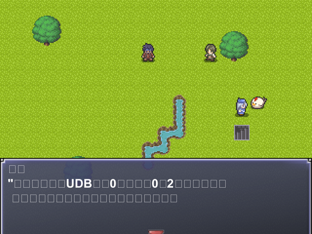
文字が正常に出ない場合にもっとも多い原因が、翻訳『先』の「ゲーム基本設定」のフォント指定が正しくなくて、その言語の文字が表示できないというケースです。
翻訳先のフォント設定を正しくおこなうため、以下の手順をおこなってみてください。
1．もし【元のゲームデータ】の「ゲーム設定」でフォントが何も設定されていない場合は、適当なフォントを設定してください。
日本語ならひとまず「Meiryo」や「Yu Gothic UI」と入れておけばOKでしょう。
（何か文字列が入っていないと対訳Excelファイルに抽出できません）
→ この手順を行った場合、ツール側で『対策Excelを最新ゲームデータ分に更新』を実行してください。
2．対訳Excelファイルを開きます。「Code」の列が「BASICDATA-3」～「BASICDATA-6」になっているところを探してください。
↓
対訳Excelファイルの内容
以下は「基本フォント」と「サブフォント1」だけ設定されているので、BASICDATA-3とBASICDATA-4だけ記述されています。
{kind=link}
3．Code列が「BASICDATA-3」～「BASICDATA-6」になっているのがフォント設定なので、上のExcel画像のように、その行の各Translated text列に、言語別に適切なフォント名を記入してください。
※ちなみに、英数字しか出せないフォントは、中国語環境や韓国語環境では正常に表示されない可能性が高いようです。
たとえば「Arial Black」などは一見、中国語でも使えそうに思えますが、ウディタ上では中国語環境で正常に表示されないため、別の太文字フォントを指定する必要があります。
Windowsでおそらく文字が正常に表示されるであろう言語別のフォント指定は以下の通りです。これらはWindowsのデフォルトで搭載されているようです。
|
4．あとはいつも通りに翻訳を実行し、「Translated1～10」フォルダ内のゲームを起動してみてください。
Q6. 訳文を空にしたい (<<BLANK>>と入れると文字列が消える)
訳文であるTranslated text1～10を「空欄」にした場合、翻訳時に「Original text（原文）」の文字列がそのままTranslated textに入ってしまうため、空白にすることができません。
もし訳文を完全な空白にしたい場合は「Translated text」に <<BLANK>> とだけ入力してください。
こうすると翻訳時に空白に置き換えることができます。
一方、翻訳先のゲームデータには「<<BLANK>>」という文字列が使えないことになるので注意してください。
Q7. 翻訳したゲームを実行すると起動せずクラッシュする
1. 「Translated1～10」フォルダ内の【Game.exeとEditor.exe】は【Ver3.00以上】のバージョンを使ってください。
（WOLF RPGエディター アーカイブサイトからダウンロードしてください）
バージョンが古い場合、Game.exeを実行したときに「Runtime Error!」と表示されてクラッシュしてしまいます。
※このツールは翻訳時にゲームデータがVer3.00以上用のものに変換されるため、それに対応したEXEでないと正常に実行できません。
Q8. 1つのゲームデータに複数言語データを入れて切り替え可能にしたい
ウディタ本体にある「基本データフォルダを切り替えて起動する」機能と、この翻訳サポートツールを併用することで、いくらか「1ゲームデータで切り替え」しているように見せることが可能になります。
「基本データフォルダ切り替え」ができると何がいいかというと、たとえば【別言語版の基本データフォルダ】を読み込みさせられるようになります。つまり「ゲーム中に動的に言語切り替えせず、起動時に切り替わる方式」なら実現しやすいのです。
※基本データフォルダ： コモンイベントやゲーム基本設定、データベース情報などを含むフォルダのこと。通常は「BasicData」フォルダがそれにあたる。
【ウディタ無料版なら】
Game.exeの起動引数に「Game.exe -basic "BasicData_EN"」などと入れて起動すると、通常の「BasicData」フォルダの代わりに「BasicData_EN」フォルダの内容を使って起動することができます。
上記引数を入れた「ショートカット」や「batファイル」を作ってプレイヤーに実行してもらうことで、言語別のデータを起動させることが可能です。
【ウディタプロ版なら】
システム文字列SysS74「[P]次起動Basicﾃﾞｰﾀﾌｫﾙﾀﾞ」に「次起動時に読ませたいフォルダ名」をセットしておくことで、次回起動時にBasicDataフォルダでなく別の基本データフォルダを読ませることが可能です。
ゲーム内で言語を切り替えした後、使うBasicDataを別言語版に切り替えて再起動させることで実現できます。
【多言語版ゲームデータの実現手順】
1.まず、複数の言語を入れるデータを「主データ」と呼ぶことにします。主データにはいま、「日本語版」の暗号化データだけ入ってるとします。
このゲームデータには「言語切り替え機能（処理4で具体的に説明します）」が搭載済みであると仮定します。
2.この翻訳サポートツールを利用し、別言語に翻訳されたゲームデータを出力します。
おそらく「Translated1_EN」フォルダの中などに出力されるでしょう。
3.「2」のゲームデータ内の「Data」フォルダ内に「英語に翻訳されたBasicData.wolf」が作れたとしたら、それを「BasicData_EN.wolf」にファイル名変更して、「主データ」の「Data」フォルダに入れます。
このとき、「主データ」の「Data」フォルダ内には、日本語版の「BasicData.wolf」と、英語版の「BasicData_EN.wolf」が一緒に入っていることになります。次は、これを切り替えてゲームを起動させられるようにします。
→ 無料版ウディタをお使いなら 4Aへ
→ プロ版ウディタをお使いなら 4Bへ
【4A～ 無料版ウディタをお使いなら】
4A. 主データの「Game.exe」があるのと同じフォルダに、仮に「GameStart_JP.bat」「GameStart_EN.bat」というファイルを新たに作ります（エクスプローラーの設定で「ファイルの拡張子を表示」するようにしていないとbatファイルが作れないかもしれません）。
テキストファイルとして新規作成したあと、「ファイル名の変更」をするのが簡単です。
5A. 「GameStart_JP.bat」「GameStart_EN.bat」をWindowsのメモ帳などで開いて、以下のように書き込みます。
GameStart_JP.bat
GameStart_EN.bat
|
6A. プレイヤーのプレイしたい言語に応じて、「GameStart_JP.bat」か「GameStart_EN.bat」の好きな方を実行してゲームを起動してもらいます。これで言語別の起動が実現できます！
【4B～ プロ版ウディタをお使いなら】
4B. 主データを起動した際、日本語版のプレイ中にプレイヤーが言語を「英語」に切り替えたら、システム文字列SysS74「[P]次起動Basicﾃﾞｰﾀﾌｫﾙﾀﾞ」に「BasicData_EN」と代入して「ゲーム再起動」させるようにイベントコマンド処理を組みます
5B. すると、「英語」に切り替えた後に次は英語版の「BasicData_EN.wolf」が読み込まれてゲームが起動するので、英語版をプレイできるようになります。これで言語の切り替え機能が実現できます！
→ 【重要!!】 英語版の起動直後にまたSysS74「[P]次起動Basicﾃﾞｰﾀﾌｫﾙﾀﾞ」に「BasicData_EN」を代入しておくと、いつゲームを終了しても次回もまた同じフォルダの基本データを使って英語版で起動可能です。
【無料版・プロ版両方における注意点】
※マップファイルは言語別に違うフォルダに出力するのがおすすめです（例：「MapData_EN」など）。
といいますか、そうしないと1ゲームデータ内で翻訳したマップやマップイベントに切り替えできません！
ウディタ翻訳サポートツールの最新版では、システムDB内の「マップファイル名」を翻訳すれば、翻訳されたマップファイルの出力ファイル名も自動で変更されます。
（[Original Message] MapData/Test.mps → [English] MapData_EN/Test.mps のように翻訳する）
※もしセーブデータも言語別に切り替えたい場合は、「セーブ先フォルダ」も言語別で切り替えるようにすると良いでしょう。
（たとえば「Save_JP」フォルダと「Save_EN」フォルダに保存するようにするなど。「主人公の名前」などが自由に付けられるゲームの場合、プレイ途中で別言語版に切り替えられると文字列が正常に表示されなくなってしまうことも多いため、こういった対策が必要になります）
※主データへのデータのまとめ作業は、「batファイル」を活用して行うと効率的です！
batファイルは書いてある処理を順番に実行してくれるというもので、「Editor.exeでのゲームデータ暗号化処理」や、「主データへのファイルコピー処理」を行うよう書き込んでおけば、batファイルを1回実行するだけでまとめて処理が可能です。詳しいことは検索で調べてみたり、チャットAIに聞いたりしてみてください。
（参考までに、「Editor.exe -gamedata -crypt DIR_ALL」と実行すると、Editorを起動せずにフォルダ個別暗号化でゲームデータを作成してくれます。詳しくはEditor.exeの起動時引数紹介ページをご覧下さい）
Q9. ツールの特定の処理を実行すると何も出ずにツールがクラッシュする
一番クラッシュの原因になりやすいのは、ゲームフォルダに作られた「WOLF_Translation_Support_Tool_Data」フォルダの中の対訳ファイル「WOLF_Translation_Text.xlsx」のフォーマットが崩れてしまった場合です。
ひとまず、試しに以下の手順を取ってみてください。
一言で言うと、空っぽの対訳ファイルを作り直して、古い対訳ファイルから「訳」の部分だけコピーしてくる方法です。
↓
| 【対訳ファイルのフォーマット崩れを直す方法】 1. ゲームフォルダ内の「WOLF_Translation_Support_Tool_Data」フォルダを開き、その中にある対訳ファイル「WOLF_Translation_Text.xlsx」をフォルダ外にバックアップしてください。Excelで同じファイル名だと開けない場合があるので、ついでにコピーしたファイルを「WOLF_Translation_Text2.xlsx」など別ファイル名に変えたほうがいいでしょう。 2. 「WOLF_Translation_Support_Tool_Data」フォルダにある元の「WOLF_Translation_Text.xlsx」と、「WOLF_Translation_Game_Config.ini」を削除してください。 3. もう一度、ツールを開き直して「①翻訳設定」からやり直し、「②対訳Excelファイルを新規作成」をして新しい対訳ファイルを作ってください。 4. バックアップした方の「WOLF_Translation_Text2.xlsx」と、新しく作った、訳が空っぽの「WOLF_Translation_Text.xlsx」を開きます。 5. バックアップした「WOLF_Translation_Text2.xlsx」ファイルの訳文の列のセルを選択して「コピー」し、空っぽのxlsxファイルの側に「貼り付け」してください。 → 以上の手順を行うことで、「WOLF_Translation_Text.xlsx」のフォーマット崩れを直せる可能性が高いと思います。 |
説明は以上です！ あなたの作品が世界のみんなに遊んでもらえますように！
ツール利用規約はストアページ内に記載されていますのでそちらからご確認ください。
また、ツールのファイルにも「ツール利用規約.txt」が同梱されています。
＜クレジット＞
【開発者】
・SmokingWOLF（WOLF RPGエディター開発者）
【お世話になったライブラリ、プログラムソース使用元】
・XLware 様（LibXL）
・unarist 様